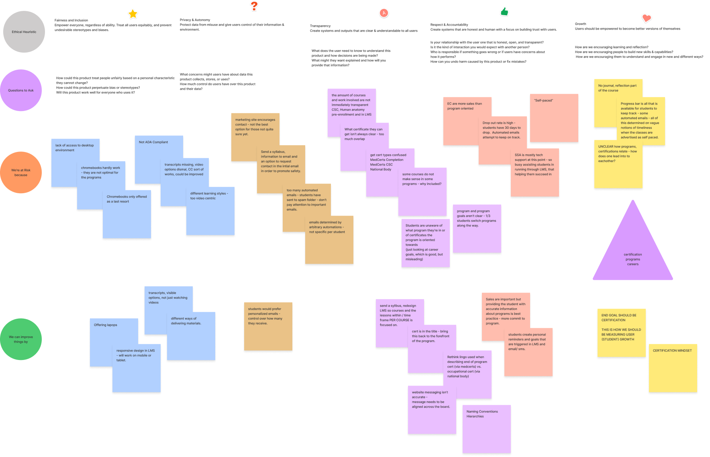
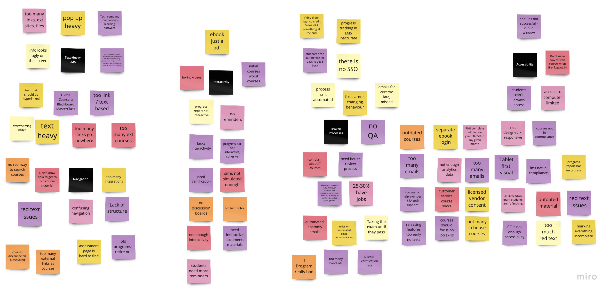
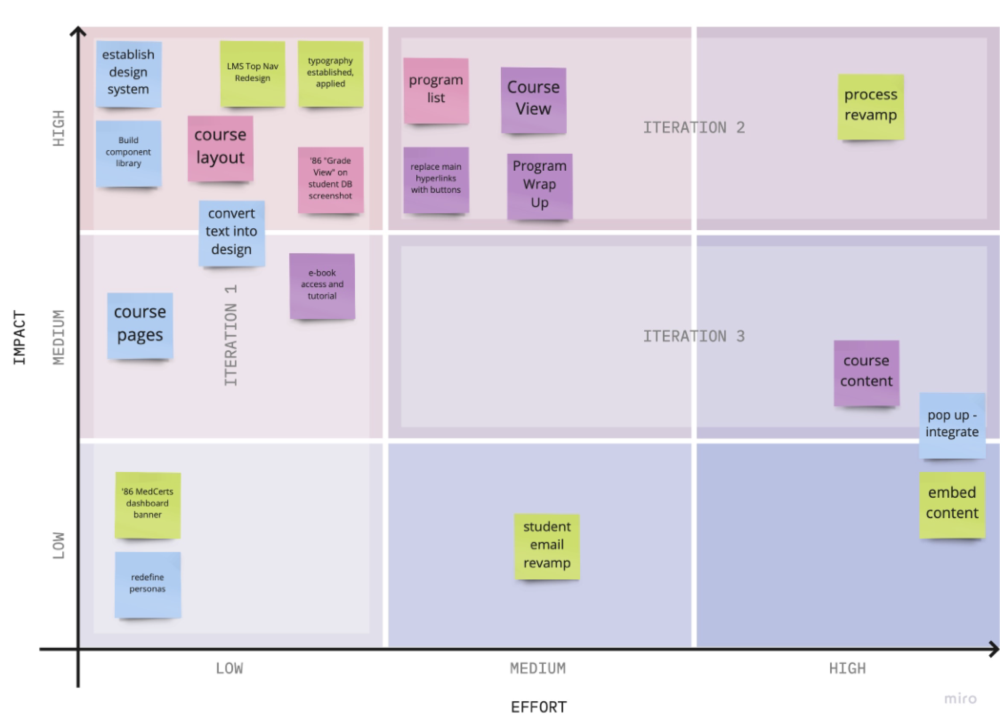

Design Principles
- Career Centric
- Progress Driven
- Transparent
Final Prototype
Problem
MedCerts is bringing in a new crop of students, more familiar with technology. They are drawn by MedCerts's commitment to an immersive, virtual program that will pave the way for in-demand jobs in healthcare. MedCerts's Learning Management System fails to deliver, and the entire student experience needs to be modernized.
Ethical Heuristic Evaluation: A Study in Transparency
Research
After my initial evaluations of the product and space, I started interviewing external and internal users to identify problems.
Affinity Diagraming Stakeholder & Student Feedback
- Core Issues with the LMS & Student Process
Personas
User Personas
Initial Designs
Initial ideations and iterations regarding LMS Design.
Usability Testing
How we tested intial designs and made data driven changes.
Responsivity
Utilizing interactive components within a mobile-first design approach, the student experience redesign is reponsive on all devices.
Final MVP
The final product will be released in installments, giving students a chance to adjust.
Features Release Schedule
